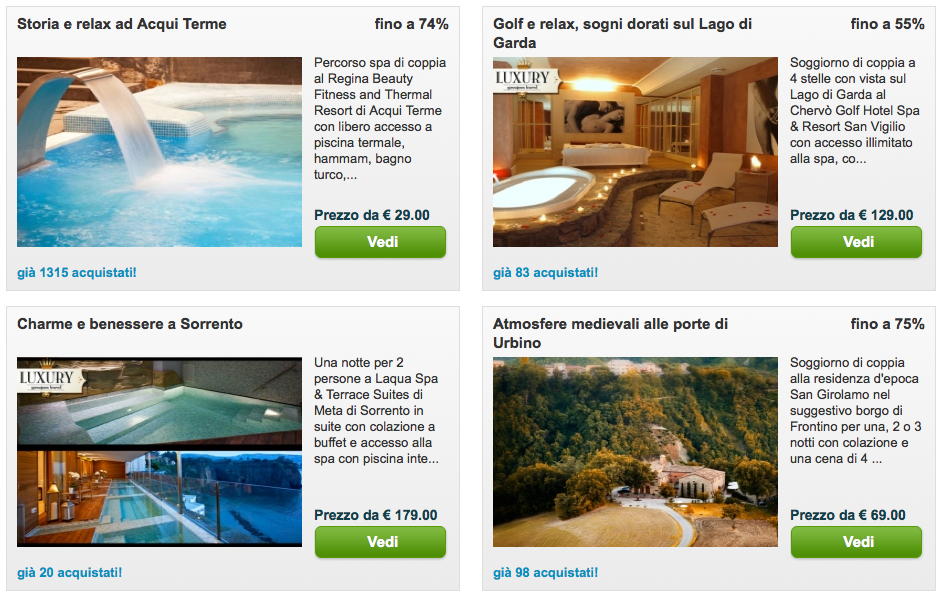

My favorite would definitely be the monastery in Umbria, how about you?Groupon in Italy
It has been a while that I wanted to write a post about Groupon Italy, first because up until a few weeks ago I didn't even know that Groupon has already crossed the ocean and landed in Italy, second because I wanted to share with you the offers we receive here.
So, when I checked my emails today and I found this, I thought that it was worth sharing, especially considering that many of you have probably already started planning their vacation for the upcoming summer (and that the chance of driving a Formula car doesn't happen every day!).
Groupon Italy has also a section dedicated to travel, where you can find interesting proposals that can take you off the beaten path, learning about places that you didn't even know existed, but are worth visiting (and, believe me, in Italy there are so many of them...). Take this, for example: a Spa in Acqui Terme (near Alessandria), a Golf Hotel on the Lake Garda, a Spa in Sorrento (near Naples), or an ancient monastery near Urbino, in Umbria.